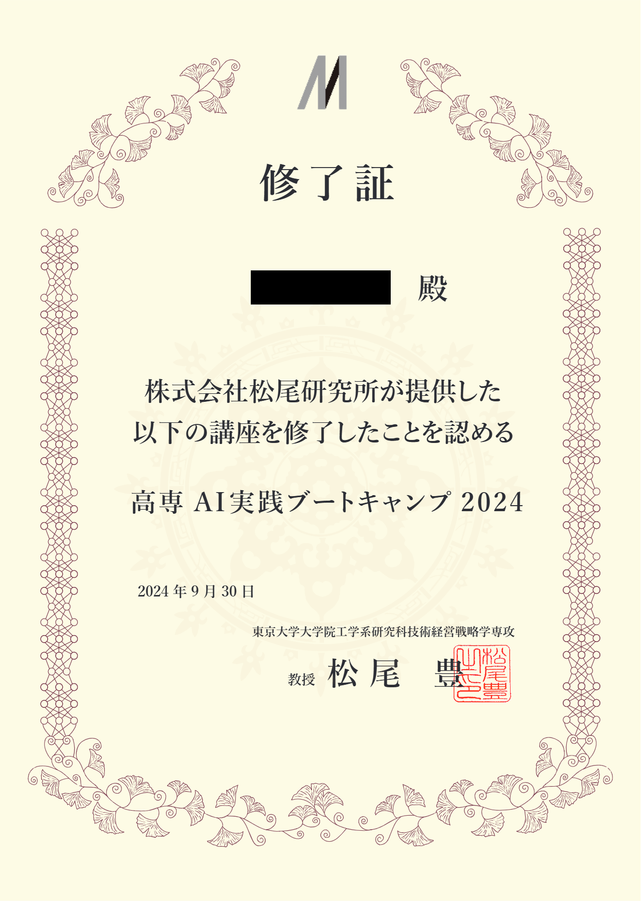

データ分析・活用の方法を学ぶ
高専AI実践ブートキャンプ2024への参加
期間：9月（6日間 計30時間）
本ブートキャンプでは、以下の内容について深く学習しました：
- 機械学習の基礎知識
- 教師あり学習・教師なし学習の実践
- 拡散モデルの理解と応用
- Transformerアーキテクチャの基礎
- 世界モデル（World Models）の概念と応用
修了証:
GCI 2024 Winterコースでの実践的学習
期間：10月～1月（週2時間×15回）
本コースでは、実務に即したデータ分析手法を学習し、以下の内容に取り組みました：
- 実践的なデータ分析手法の習得
- ヒートマップなどを用いたデータの可視化技術の習得
- 最終課題：「人事データの離職分析」の実施
修了証:

データ分析成果物:一部抜粋
最終課題として、「架空の人事データが与えられ、そのデータをもとに人事社員への業務改善提案を行う」という課題が出された。データ構造(一部抜粋):

データ分布:

離職分析のヒートマップ可視化:

予測モデル性能評価:
勾配ブースティング法による結果:
人事施策への提案:

特に、データの可視化手法については、業務改善への具体的な応用可能性を見出すことができ、今後の実務への活用が期待できます。